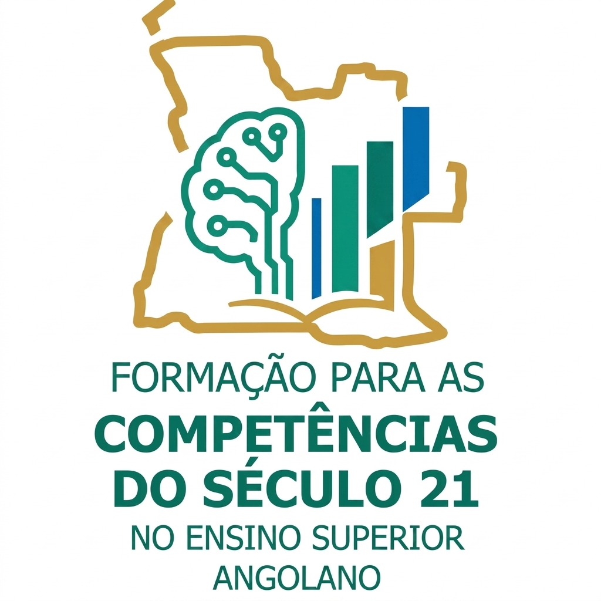
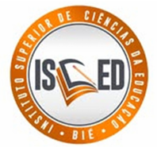

Preparando estudantes e docentes para os desafios globais do século XXI.
O projecto #FORM#COMP21#ESA foca-se na investigação e implementação de competências transversais que integram tecnologia, pedagogia e a realidade do contexto universitário em Angola. O seu objectivo é estabelecer um modelo pedagógico — constituído por directrizes estratégicas — que potencie o ensino e a aprendizagem das competências do século XXI, tanto nas unidades curriculares de Matemática como nas demais áreas curriculares das licenciaturas angolanas.
A abordagem deste projecto foca-se em aprofundar o conhecimento sobre o ensino e a aprendizagem das competências do século XXI no âmbito destas licenciaturas. Esta análise permitirá aos diversos intervenientes desenhar currículos baseados em evidências, oferecendo uma experiência de formação verdadeiramente significativa para os futuros licenciados.
A Universidade do Namibe (UNINBE), através da Faculdade de Ciências Naturais, é a entidade coordenadora deste projecto, em conjunto com o Instituto Superior de Ciências da Educação do Bié (ISCED Bié) e a Universidade de Trás-os-Montes e Alto Douro (UTAD).

Este projecto é financiado pelo FUNDECIT (Fundação para o Desenvolvimento Científico e Tecnológico).
Articular uma linguagem comum sobre as competências do século 21 (COMP21), estabelecendo a ponte entre os sectores socioeconómicos e os contextos educativos profissionais.
Capacitar o corpo docente para o ensino das COMP21, fundamentando-se numa prática educativa partilhada e num sólido quadro de investigação.
Avaliar e identificar princípios estratégicos de ensino que favoreçam o desenvolvimento das COMP21, com base em indicadores-chave de desempenho docente e discente.
Resumo das competências fundamentais analisadas no âmbito do Ensino Superior Angolano.
Avaliação lógica da informação para a tomada de decisões informadas.
Desenvolvimento de pensamento inovador e resolução de problemas através de novas perspectivas.
Trabalho conjunto entre estudantes para atingir objectivos comuns.
É a prática de transmitir ideias utilizando uma variedade de métodos.
Oferece aos estudantes as ferramentas necessárias para distinguir os factos da ficção.
Ajuda os estudantes a analisar os media e a compreender possíveis problemas que podem surgir ao utilizar ferramentas digitais.
Compreensão de diferentes aplicações e as melhores formas de as utilizar no ensino.
É a capacidade do estudante de se adaptar às mudanças e de compreender as diferenças de pontos de vista que impactam as decisões. .
Envolve a capacidade do estudante influenciar e orientar os outros para um objectivo comum.
Por vezes denominada motivação intrínseca, está relacionada com os estudantes que iniciam projectos, criam planos e executam estratégias por conta própria.
Mede o quão bem o estudante estabelece as prioridades, planeia e gere o seu trabalho.
Referem-se às competências necessárias para interagir eficazmente com os outros, especialmente quando se trabalha com um grupo diversificado.
Campus da Ponta do Noronha, Farol de Noronha, Moçâmedes, Namibe, Angola.